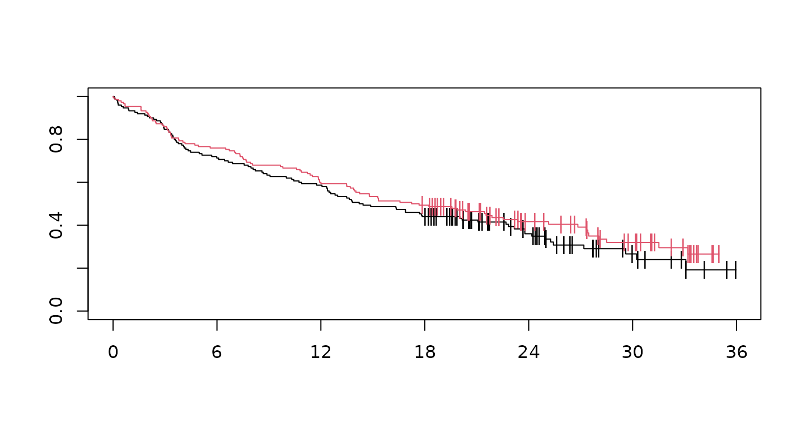
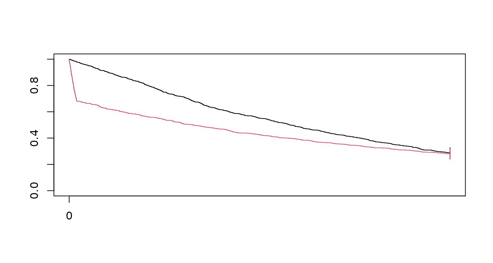

Using the Magirr-Burman weights for testing
Keaven Anderson, Yujie Zhao
Source:vignettes/modest-wlrt.Rmd
modest-wlrt.RmdIntroduction
Magirr and Burman (2019) implemented a modestly weighted logrank test with the following claim:
Tests from this new class can be constructed to have high power under a delayed-onset treatment effect scenario, as well as being almost as efficient as the standard logrank test under proportional hazards.
They have implemented this in the package modestWLRT. Since
the implementation is relatively straightforward, we have added this
functionality to the simtrial package and explain how to use it here
with the mb_weight() function.
Packages used are as follows:
Simulating a delayed effect example
First, we specify study duration, sample size and enrollment rates. The enrollment rate is assumed constant during the enrollment period until the targeted sample size is reached. For failure rates, we consider the delayed treatment effect example of Magirr and Burman (2019). The control group has an exponential failure rate with a median of 15 months. For the initial 6 months, the underlying hazard ratio is one followed by a hazard ratio of 0.7 thereafter. This differs from the Magirr and Burman (2019) delayed effect assumptions only in that they assume a hazard ratio of 0.5 after 6 months.
study_duration <- 36
sample_size <- 300
enroll_rate <- data.frame(duration = 12, rate = 200 / 12)
fail_rate <- data.frame(
stratum = c("All", "All"),
duration = c(6, 36),
fail_rate = c(log(2) / 15, log(2) / 15),
hr = c(1, .7),
dropout_rate = c(0, 0)
)Now we generate a single dataset with the above characteristics and cut data for analysis at 36 months post start of enrollment. Then we plot Kaplan-Meier curves for the resulting dataset (red curve for experimental treatment, black for control):
set.seed(7789)
xpar <- to_sim_pw_surv(fail_rate)
MBdelay <- sim_pw_surv(
n = sample_size,
stratum = data.frame(stratum = "All", p = 1),
block = c(rep("control", 2), rep("experimental", 2)),
enroll_rate = enroll_rate,
fail_rate = xpar$fail_rate,
dropout_rate = xpar$dropout_rate
) |>
cut_data_by_date(study_duration)
fit <- survfit(Surv(tte, event) ~ treatment, data = MBdelay)
plot(fit, col = 1:2, mark = "|", xaxt = "n")
axis(1, xaxp = c(0, 36, 6))
Generalizing the Magirr-Burman test
Next, we consider the Magirr (2021) extension of the modestly weighted logrank test (MWLRT) of Magirr and Burman (2019) where we have weights as follows:
w(t, \tau, w_{\max}) = \min\left(w_{\max},\left(\frac{1}{S(\min(t,\tau))}\right)\right).
This requires generating weights and then computing the test. We
begin with the default of w_max=Inf which corresponds to
the original Magirr and Burman (2019) test
and set the time until maximum weight \tau with delay = 6.
ZMB <- MBdelay |>
wlr(weight = mb(delay = 6))
# Compute p-value of modestly weighted logrank of Magirr-Burman
pnorm(ZMB$z, lower.tail = FALSE)
#> [1] 0.1395378Now we set the maximum weight to be 2 as in Magirr (2021) and set the delay=Inf
so that the maximum weight begins at the observed median of the observed
combined treatment Kaplan-Meier curve.
ZMB <- MBdelay |>
wlr(weight = mb(delay = Inf, w_max = 2))
# Compute p-value of modestly weighted logrank of Magirr-Burman
pnorm(ZMB$z, lower.tail = FALSE)
#> [1] 0.1387672Another way this can be done is with a generalized Fleming-Harrington test with
w(t; \rho, \gamma, w_{\max})= \min((1-F(t))^\rho F(t)^\gamma, w_{\max})).
and let \gamma=0, \rho = -1/2.
w_max <- 2
Z_modified_FH <- MBdelay |>
counting_process(arm = "experimental") |>
mutate(w = pmin(w_max, 1 / s)) |>
summarize(
S = sum(o_minus_e * w),
V = sum(var_o_minus_e * w^2),
z = S / sqrt(V)
)
# Compute p-value of modestly weighted logrank of Magirr-Burman
pnorm(Z_modified_FH$z)
#> [1] 0.1387672Freidlin and Korn strong null hypothesis example
For the next example, underlying survival is uniformly worse in the experimental group compared to control throughout the planned follow-up. This was presented by Freidlin and Korn (2019). For this case, we have a hazard ratio of 16 for 1/10 of 1 year (1.2 months), followed by a hazard ratio of 0.76 thereafter.
First, we specify study duration, sample size and enrollment rates. The enrollment rate is assumed constant during the enrollment period until the targeted sample size is reached. For failure rates, we consider the delayed treatment effect example of Magirr and Burman (2019).
study_duration <- 5
sample_size <- 2000
enroll_duration <- .0001
enroll_rate <- data.frame(
duration = enroll_duration,
rate = sample_size / enroll_duration
)
fail_rate <- data.frame(
stratum = "All",
fail_rate = 0.25,
dropout_rate = 0,
hr = c(4 / .25, .19 / .25),
duration = c(.1, 4.9)
)Now we generate a single dataset with the above characteristics and cut data for analysis at 5 years post start of enrollment. Then we plot Kaplan-Meier curves for the resulting dataset (red curve for experimental treatment, black for control):
set.seed(7783)
xpar <- to_sim_pw_surv(fail_rate)
FHwn <- sim_pw_surv(
n = sample_size,
stratum = data.frame(stratum = "All", p = 1),
block = c(rep("control", 2), rep("experimental", 2)),
enroll_rate = enroll_rate,
fail_rate = xpar$fail_rate,
dropout_rate = xpar$dropout_rate
) |>
cut_data_by_date(study_duration)
fit <- survfit(Surv(tte, event) ~ treatment, data = FHwn)
plot(fit, col = 1:2, mark = "|", xaxt = "n")
axis(1, xaxp = c(0, 36, 6))
We perform a logrank and weighted logrank tests as suggested for more limited downweighting by follows, and a MaxCombo test with these component tests, we have p-value of:
xx <- FHwn |>
maxcombo(rho = c(0, 0, 1), gamma = c(0, 1, 1))
xx
#> $method
#> [1] "MaxCombo"
#>
#> $parameter
#> [1] "FH(0, 0) + FH(0, 1) + FH(1, 1)"
#>
#> $z
#> [1] 4.808526 -3.204735 -1.220445
#>
#> $p_value
#> [1] 0.001256683Next, we consider the Magirr and Burman (2019) modestly weighted logrank test with down-weighting specified for the first 6 months but a maximum weight of 2. This requires generating weights and then computing the test.
ZMB <- FHwn |>
wlr(weight = mb(delay = 6, w_max = 2))
# Compute p-value of modestly weighted logrank of Magirr-Burman
pnorm(ZMB$z, lower.tail = FALSE)
#> [1] 0.920727Finally, we consider weighted logrank tests with less down-weighting. Results are quite similar to the results with greater down-weighting. We have p-value of
xx <- FHwn |>
maxcombo(rho = c(0, 0, .5), gamma = c(0, .5, .5))
xx
#> $method
#> [1] "MaxCombo"
#>
#> $parameter
#> [1] "FH(0, 0) + FH(0, 0.5) + FH(0.5, 0.5)"
#>
#> $z
#> [1] 4.8085258 -0.6919228 0.9278452
#>
#> $p_value
#> [1] 0.2915952Thus, with less down-weighting the MaxCombo test appears less problematic. This is addressed at greater length in Mukhopadhyay et al. (2022).